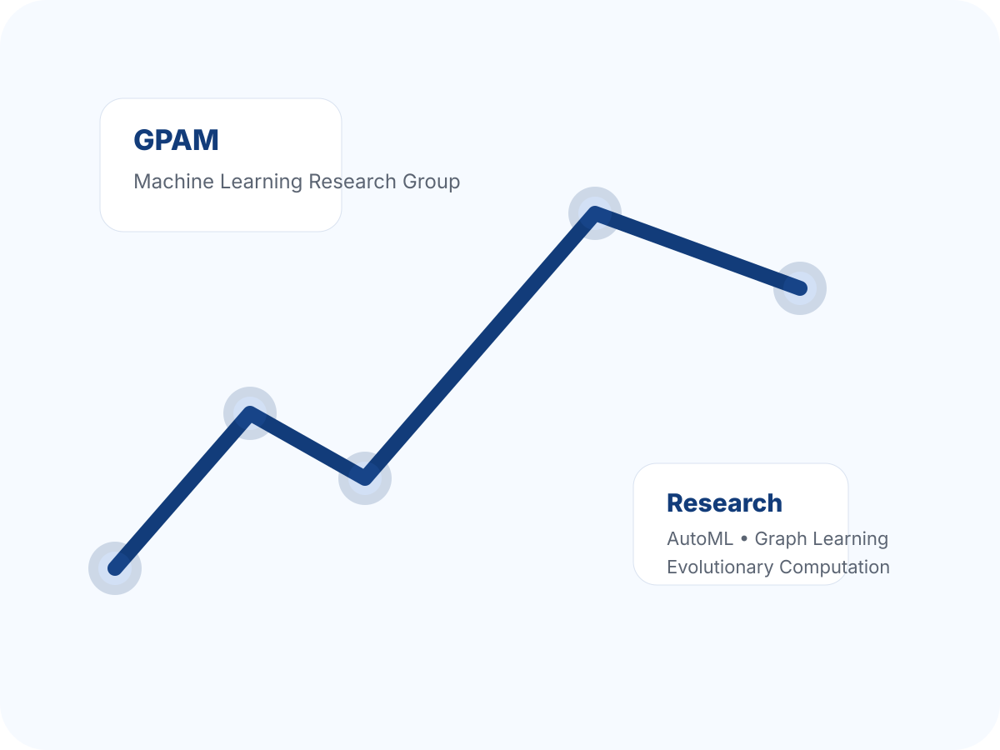

Competências centrais
Aprendizado de Máquina, Ciência de Dados, Aprendizado de Máquina Automatizado, otimização evolutiva, construção de grafos e aprendizado com supervisão limitada.
AutoMLComputação EvolutivaAprendizado em Grafos
O GPAM é um grupo de pesquisa sediado na Universidade Federal de São Paulo (UNIFESP), dedicado ao avanço teórico e aplicado do aprendizado de máquina, com ênfase em sistemas adaptativos, automação e descoberta orientada por dados.
Nossa atuação abrange Aprendizado de Máquina Automatizado (AutoML), aprendizado baseado em grafos, computação evolutiva, fluxos de dados, aprendizado semissupervisionado e modelagem preditiva para problemas complexos do mundo real.

O GPAM desenvolve métodos que combinam rigor metodológico, avaliação empírica e aplicabilidade a desafios contemporâneos em Inteligência Artificial.
Aprendizado de Máquina, Ciência de Dados, Aprendizado de Máquina Automatizado, otimização evolutiva, construção de grafos e aprendizado com supervisão limitada.
Valorizamos experimentação comparativa, reprodutibilidade, baselines fortes e conexões significativas entre teoria e aplicação.
O grupo está aberto a parcerias com universidades, institutos de pesquisa, empresas e organizações públicas interessadas em soluções baseadas em IA.
Esta versão inicial já funciona no GitHub Pages. Você pode publicá-la como está e, aos poucos, substituir os conteúdos de exemplo pelas informações oficiais do GPAM, fotos, detalhes dos projetos e links de publicações.
Próximas edições recomendadas: substituir os placeholders da página de pessoas, inserir os projetos financiados com datas e agências e adicionar uma lista curada de publicações selecionadas.